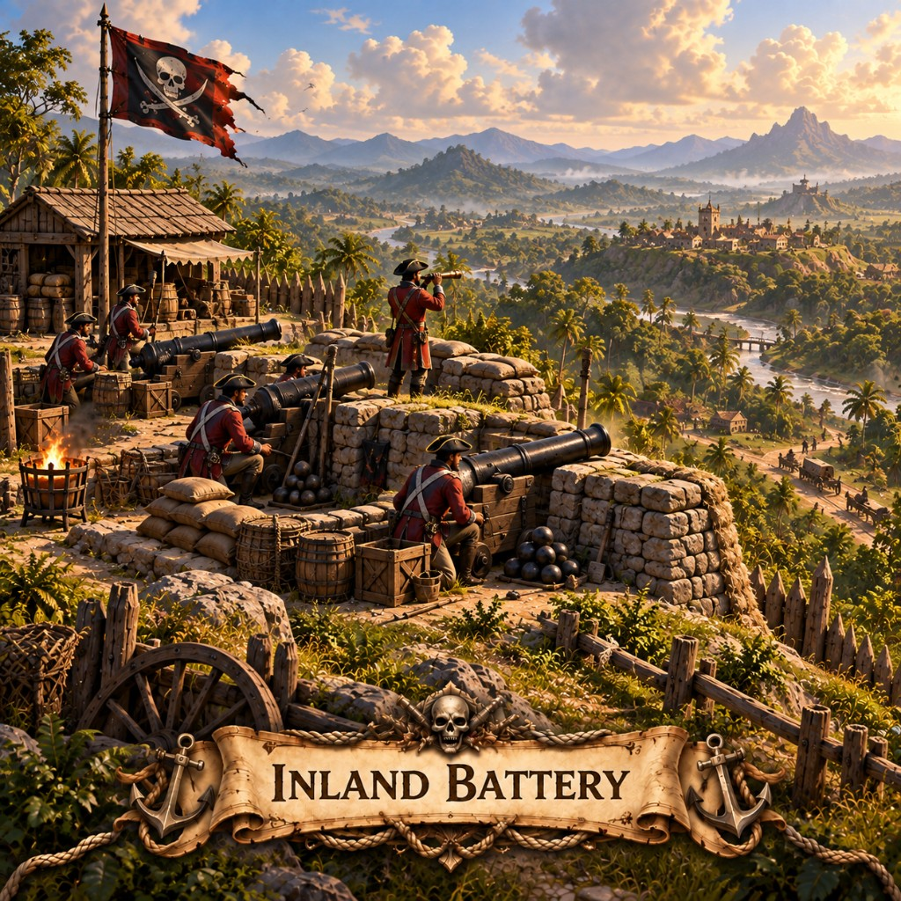

Inland Battery in Marauder's Sea: $1.5M land cannon, 15s reload, auto or manual aim, 80/20 landing ring. How to fire it.

Not every fight is at the beach. Some captains haul guns up the hill so the valley itself becomes a barrel. Inland Batteries are how a pirate empire says the interior is not safe either.
Place on owned land. $1,500,000 to place or upgrade, levels 1–10 (shells per volley). 15 second reload. Auto-fire on by default; manual lets you pick the impact circle (green in range, red out). Shells scatter in a landing ring: about 80% toward a target, 20% toward troops. Hits over water, but a water landing is a dud. Land hits scorch a small patch of enemy ground — not yours. Range 100–210 tiles. Destroyed at zero HP, including if captured. Hotkey 8.
Back to the building list or pick a map like X Marks the Spot and play this mobile strategy game in the browser.